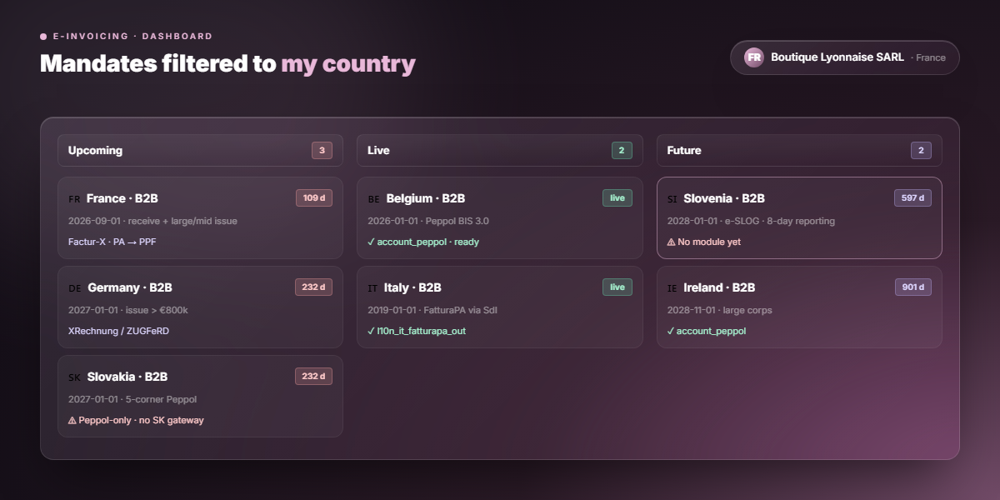
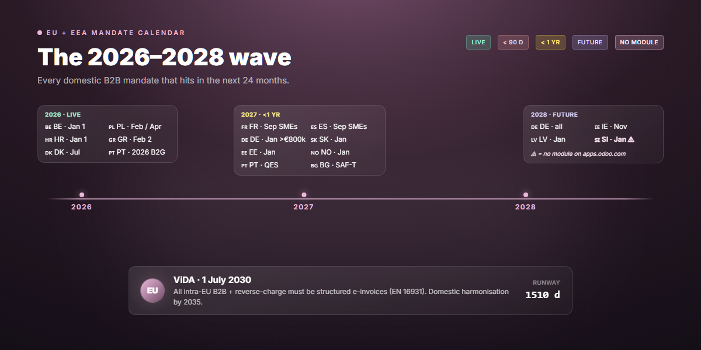
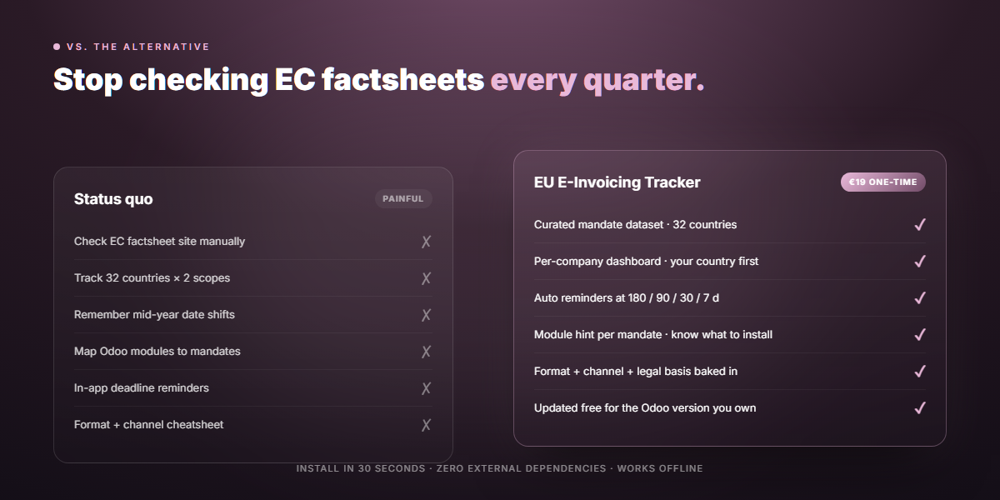

Twelve EU countries push new domestic B2B e-invoicing mandates live between 2026 and 2028. Each one has a different format, a different channel, a different legal authority, and a different penalty. This module turns that chaos into one Odoo dashboard — filtered to your company’s country, with automated deadline reminders, format cheatsheets, and direct hints to which Odoo module covers each mandate.
Belgium B2B was mandatory on 1 January 2026, with graduated penalties from €1,500 to €5,000 per infringement once the 3-month tolerance ends. Poland’s KSeF follows on 1 February for large taxpayers and 1 April for everyone else. Croatia, Greece, Denmark pile on through 2026. France issuing kicks in for SMEs on 1 September 2027. Germany flips on for >€800k issuers on 1 January 2027 — and for everyone on 1 January 2028.
Every quarter, the dates shift. Slovenia postponed once already. Portugal delayed its QES requirement. Romania moved the B2C goalposts. Trying to track this manually on the European Commission’s factsheet pages is a part-time job, and missing a date is a real-money penalty.
Ships with a curated mandate dataset covering all 27 EU member states plus Norway, Iceland, Liechtenstein, Switzerland, and the United Kingdom. Each entry carries:

A daily cron checks every active mandate against your company’s country and posts an in-app reminder on each mandate’s chatter at the four classic compliance windows: six months out for budget season, three months out for vendor selection, one month out for go-live readiness, and one week out for crisis mode. Account managers in your company are auto-tagged. Duplicate-sending is prevented by an internal reminder log.

Finance teams in 2026 cannot rely on the EC factsheet site alone — it’s comprehensive, but it’s not yours. It doesn’t tell you that your French Odoo install needs a Plateforme Agréée link, that your Slovenian subsidiary will need an e-SLOG module that doesn’t exist on apps.odoo.com yet, that your Polish entity has a 60-day window to onboard onto KSeF or eat the fine.
This module makes that mapping concrete: it knows your company’s country, it surfaces only the mandates that apply to you, and it tells you exactly which Odoo module you need (or warns you that none exists yet).

One-time per database. Free updates per Odoo version. Pay once, install on as many databases of that Odoo version as you need. When you upgrade to a new major Odoo version, the module ships free for that version too while you remain a customer of the current one.
Lightweight by design: depends only on base,
mail, and account. Works on Odoo 18 Community
and Enterprise. No external SaaS, no per-seat fees, no API keys, no
tracking. Mandate data is bundled in the module itself — the
module works offline.
Future companion modules will cover the country mandates where no first-party Odoo solution exists yet:
Owning the Tracker today means earlier access and discounted bundles on companion modules as they ship.
Mandate dates in this module reflect the publicly available state as of 13 May 2026. Dates have shifted multiple times in the past 12 months — Slovenia postponed once, Portugal delayed QES, Latvia moved B2B to 2028. Updates ship in future module versions. For any deadline you are about to act on, verify against the European Commission’s eInvoicing Country Factsheets.